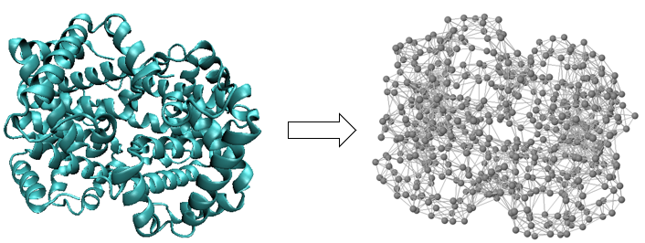
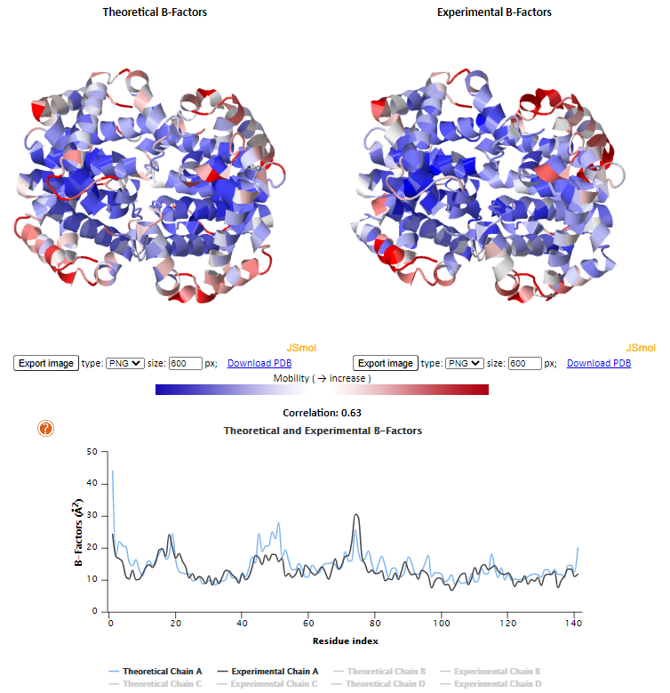
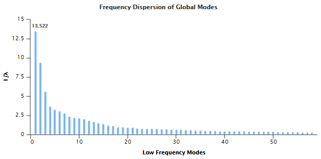
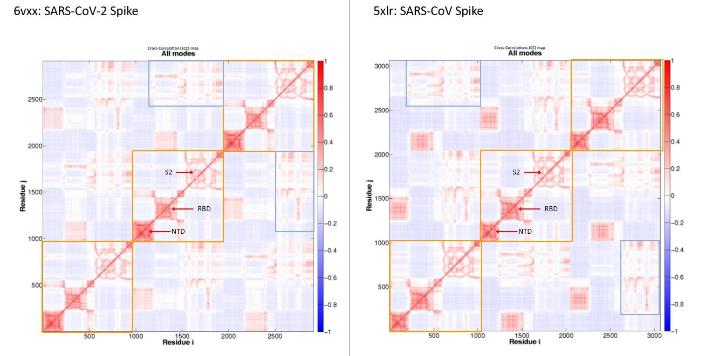

Conclusion: From Static Protein Analysis to Molecular Dynamics
Modeling protein bonds using tiny springs
To conclude part 2 of this module, we transition from the static study of proteins to the field of molecular dynamics (MD), in which we simulate the movement of proteins’ atoms, along with their interactions as they move.
You may think that simulating the movments of proteins with hundreds of amino acids will be a hopeless task. After all, predicting the static structure of a protein has occupied biologists for decades! Yet part of what makes structure prediction so challenging is that the “search space” of potential shapes is so enormous. Once we have established the static structure of a protein, its dynamic behavior will not allow it to deviate greatly from this static structure, and so the space of potential structures is automatically narrowed down to those that are similar to the static structure.
A protein’s molecular bonds are constantly vibrating, stretching and compressing, much like that of the oscillating mass-spring system shown in the figure below. Bonded atoms are held together by sharing electrons and are held at specific bond length due to the attraction and repulsion forces of the negatively charged electrons and positively charged nucleus. If you push the atoms closer together or pull them farther apart, they will “bounce back” to their equilibrium.
 A mass-spring system in which a mass is attached to the end of a spring. The more we move the mass from its equilibrium, the greater its resistance and the more it will be repelled back toward equilibrium. Courtesy: flippingphysics.com.
A mass-spring system in which a mass is attached to the end of a spring. The more we move the mass from its equilibrium, the greater its resistance and the more it will be repelled back toward equilibrium. Courtesy: flippingphysics.com.
In an elastic network model (ENM), we imagine nearby alpha carbons of a protein structure to be connected by springs. Because distant atoms will not influence each other, we will only connect two alpha carbons if they are within some threshold distance of each other (the default threshold used by ProDy is seven angstroms).
A major strength of ProDy is its implementation of a Gaussian network model (GNM), an ENM for molecular dynamics; the GNM is called “Gaussian” because protein bond movements follow normally distributed (Gaussian) distributions around their equilibria. Furthermore, this model is isotropic, meaning that it only considers the magnitude of force exerted on the springs between nearby molecules and ignores any global effect on the directions of these forces.
Although it may seem that atomic movements are frantic and random, the movements of protein atoms are in fact heavily coordinated, owing to the evolution of the proteins to perform replicable tasks. As a result, the oscillations of these particles are often highly structured and can be summarized by using a combination of functions explaining them, or modes. (For those familiar with Fourier analysis, this is analogous to the fact that a function under certain conditions can be approximated using a sum of sine and cosine waves.) The paradigm resulting from the insight of breaking down oscillations into a comparatively small number of modes that summarize them is called normal mode analysis (NMA) and powers the elastic model that ProDy implements.
Introduction to GNM
Performing GNM analysis on a protein gives us a fairly accurate understanding of how the protein is structured, particularly on the flexibility of the proteinand how each residue moves relative to the rest. In this section, we will revisit the human hemoglobin (1A3N.pdb) to peform GNM analysis. Recall that in GNM, the target molecule is represented using ENM. Therefore, the first step in GNM analysis is to convert hemoglobin into a system of nodes and springs. As mentioned above, this can be easily done by stripping the protein to only alpha carbons and connecting alpha carbons that are within a threshold distance. Generally, the threshold distance for GNM is set between 7 to 8 Å.
 Conversion of human hemoglobin (left) to an elastic network model with cutoff distance of 7.3 Å (right).
Each node in the model is subject to Gaussian fluctuations that cause it to deviate in position from its equilibrium. As a direct consequence, the distance between nodes will also undergo Gaussian fluctuations. For a given node i and node j, the equilibrium position is represented by the equilibrium position vector \(R_i^0\) and \(R_j^0\). The fluctuation for node i and node j is represented by instantaneous fluction vectors \(\Delta R_i\) and \(\Delta R_j\). The distance between node i and node j at equilibrium is represented by the equilibrium distance vector \(R_{ij}^0\), and the distance between nodes i and j in fluctuation is represented by the instantaneous distance vector \(R_{ij}\). Finally, we can calculate the fluctionation in the distance, \(\Delta R_{ij} = R_{ij} - R_{ij}^0 = \Delta R_j - \Delta R_i\).
 Schematic showing gaussian fluctuations between two nodes. Equilibrium positions of node i and node j are represented by distance vectors \(R_i^0\) and \(R_j^0\). The equilibrium distance between the nodes is labelled \(R_{ij}^0\). The instantaneous fluction vectors, are labelled \(\Delta R_i\) and \(\Delta R_j\) and the instantaneous distance vector is labeled \(\Delta R_{ij}\). Image courtesy of Ahmet Bakan.
Schematic showing gaussian fluctuations between two nodes. Equilibrium positions of node i and node j are represented by distance vectors \(R_i^0\) and \(R_j^0\). The equilibrium distance between the nodes is labelled \(R_{ij}^0\). The instantaneous fluction vectors, are labelled \(\Delta R_i\) and \(\Delta R_j\) and the instantaneous distance vector is labeled \(\Delta R_{ij}\). Image courtesy of Ahmet Bakan.
The next step is to construct a Kirchhoff matrix, also known as the Laplacian matrix or connectivity matrix, represented by the symbol \(\Gamma\). Commonly used in graph theory, the Kirchhoff matrix is essentially a square matrix representation of a graph. By transforming the protein into a set of connected nodes, we are converting the protein into a graph. Therefore, the Kirchhoff matrix can be used to represent the protein, allowing us to go from a biochemistry problem to a linear algebra problem. In this case, the Kirchhoff matrix is the matrix representation of which pairs of residues are connected. There are also some useful properties of the Kirchhoff matrix that we will take advantage of later on. The matrix is constructed as follows:
\[\Gamma_{ij} = \begin{cases} & -1 \text{ if $i \neq j$ and $R_{ij} \leq r_c$}\\ & 0 \text{ if $i \neq j$ and $R_{ij} > r_c$} \end{cases}\] \[\Gamma_{ii} = -\sum_j \Gamma_{ij}\]where \(r_c\) is the threshold distance. Simply put, if residue i and residue j are connected, then the value of position i,j in the matrix will be -1. If they are not connected, the the value will be 0. The values of the diagonals, i.e. position i,i, correspond to the total number of connections of residue i.
 Toy structure and the corresponding Kirchhoff matrix.
Toy structure and the corresponding Kirchhoff matrix.
One of the most common analysis using GNM is on the coordinated movement between residues as the protein fluctuates. More specifically, we want to see how each residue will move relative to other residues, or the cross-correlation between the residues. Recall that we are representing the fluctuations as vectors (see Gaussian Fluctuations). Therefore, for some residue i and residue j, we are trying to compute how much of the fluctation vector \(\Delta R_i\) points in the the same direction as the fluctuation vector \(\Delta R_j\). To do this, we need to compute the inner product of the vectors, denoted by the angle brackets: \(\langle \rangle\), which is a generalization of the dot product. In other words, computing the inner product between the fluctuation vectors is synonomous to computing the cross-correlation between the residues. As such, the cross-correlation between residue i and residue j is often represented as \(\langle \Delta R_i \cdot \Delta R_j \rangle\). It turns out that the inner product is correlated to the inverse of the Kirchhoff matrix, allowing us to simply invert the Kirchhoff matrix. The cross-correlation between some residue i and residue j can be mathmatically calculated as follows:
\[\langle \Delta R_i \cdot \Delta R_j \rangle = \frac{3 k_B T}{\gamma} \left[ \Gamma^{-1} \right]_{ij}\]where \(k_B\) is the Boltzmann constant, \(\gamma\) is the spring constant (stiffness of the spring), and \(\left[ \Gamma^{-1} \right]_{ij}\) is element ij in the inverted Kirchhoff matrix. Similarly, we can also calculate the expectation values of the fluctuation for each residue, or the mean-square fluctuations, which is the inner product of the fluctuation vector with itself:
\[\langle \Delta R_i^2 \rangle = \frac{3 k_B T}{\gamma} \left[ \Gamma^{-1} \right]_{ii}\]From these equations, we can see that the inverse Kirchhoff matrix fully defines both the cross-correlations between residue motions as well as the mean-square fluctions of the residues.
\[\left[ \Gamma^{-1} \right]_{ij} \sim \langle \Delta R_i \cdot \Delta R_j \rangle\] \[\left[ \Gamma^{-1} \right]_{ii} \sim \langle \Delta R_i^2 \rangle\]However, we run into problems here because cannot simply invert the Kirchhoff matrix. In linear algebra, a matrix is invertible if and only if its determinant is zero. Unfortunately for us, one of the special properties of the Kirchhoff matrix in GNM is that the determinant is zero, and we cannot directly invert the matrix to get \(\Gamma^{-1}\). Thankfully, there is a method to compute the values of the inverted matrix by performing eigen decomposition on the matrix.
\[\Gamma = U \Lambda U^T\]where \(U\) is the orthogonal matrix with the \(k^{th}\) column, represented by \(u_k\), corresponding to the \(k^{th}\) eigenvector of \(\Gamma\), and \(\Lambda\) is the diagonal matrix of eigenvalues, represented by \(\lambda_k\). Based on the characteristics of the Kirchhoff matrix (positive semi-definite), the first eigenvalue, \(\lambda_1\), is 0. The remaining \(N-1\) eigenvalues, as well as the eigenvectors in \(U\), actually directly describe the modes of motion that discussed earlier in this lesson. The elements of eigenvector \(u_k\) describe the distribution of residue displacements, normalized over all the residues, along the \(k^{th}\) mode axis. In other words, the motion of the \(i^{th}\) residue along the \(k^{th}\) mode is described by the \(i^{th}\) element in eigenvector \(u_k\). The corresponding eigenvalue \(\lambda_k\) describes the frequency of the \(k^{th}\) mode, where the smallest \(\lambda\) value corresponds to the lowest frequency modes, or slowest modes, that make the largest contribution to the overall protein motion.
After eigen decomposition, we can now rewrite the cross-correlation equation as a sum of the N-1 GNM modes:
\[\langle \Delta R_i \cdot \Delta R_j \rangle = \frac{3 k_B T}{\gamma} \sum_{k=1}^{N-1} \left[ \lambda_k^{-1} u_k u_k^T \right]_{ij}\]and similarly for mean-square fluctuation:
\[\langle \Delta R_i^2 \rangle = \frac{3 k_B T}{\gamma} \sum_{k=1}^{N-1} \left[ \lambda_k^{-1} u_k u_k^T \right]_{ii}\]Now that we can compute the cross-correlation between residues, we can normalize the values and construct a normalized cross-correlation matrix, \(C^{(n)}\), such that:
\[C^{(n)}_{ij} = \frac{\langle \Delta R_i \cdot \Delta R_j \rangle}{\left[ \langle \Delta R_i \cdot \Delta R_i \rangle \langle \Delta R_j \cdot \Delta R_j \rangle \right]^{\frac{1}{2}}}\]where \(C^{(n)}_{ij}\) corresponds to the orientational cross-correlation between residue i and residue j. Because we normalized the values, the range of \(C^{(n)}_{ij}\) is \([-1,1]\), where 1 means the residues are fully correlated in motion, and -1 means the residues are fully anti-correlated in motion.
Cross-Correlation Map
Cross-correlation analysis provides useful insight on the structure of the protein. The regions of high correlation coming off the diagonal typically provide information on secondary structures (residues in the same secondary structure will typically move together). On the other hand, high correlation regions not near the diagonal provide information on the tertiary structure of the protein, such as protein domains and clues to which parts of the protein work together. In general, we can observe complex patterns of correlated and anti-correlated movement throughout the protein (both inter- and intrasubunit), which can act like some sort of fingerprint. We can compare the cross-correlation between regions of the same protein or the cross correlation map between two similar proteins to find differences in the correlation patterns. This would then provide clues in where the proteins or protein regions are different structurally and possibly functionally. After calculating the cross-correlation for each residue pair, we can organize the data as a matrix and then visualize it as a cross-correlation heat map like the figure below.
 Normalized cross-correlation heat map of human hemoglobin (1A3N) using the first 20 slowest normal modes. Red regions indicate correlated residue pairs which move in the same direction; blue regions indicate anti-correlated residue pairs which move in opposite directions.
Normalized cross-correlation heat map of human hemoglobin (1A3N) using the first 20 slowest normal modes. Red regions indicate correlated residue pairs which move in the same direction; blue regions indicate anti-correlated residue pairs which move in opposite directions.
In the cross-correlation map of human hemoglobin above, we see four squares of positive correlation along the diagonal. This represents the four subunits of hemoglobin, \(\alpha_1\), \(\beta_1\), \(\alpha_2\), and \(\beta_2\) in this order and the intrasubunit correlations. We can differentiate between the two types of subunits by comparing the correlation patterns between the four squares. We see that the same patterns can be seen between the first and third square, and the second and fourth square. Assuming that first square represents \(\alpha_1\), we can deduce that the third square represents \(\alpha_2\), and that the second and fourth square represent \(\beta\) subunits.
The rest of the cross-correlation map (regions next to the diagonal squares) provide evidence of high intersubunit correlations between \(\alpha_1 \beta_1\)/\(\alpha_2 \beta_2\), some correlation between the \(\alpha_1 \beta_2\)/\(\alpha_2 \beta_1\), and minimal correlation between the \(\alpha_1 \alpha_2\)/\(\beta_1 \beta_2\). This agrees with experimental analysis of human hemoglobin on the interaction of the extensive, cooperative interactions between \(\alpha\) and \(\beta\) subunits, and minimal interactions between \(\alpha\) subunits and between \(\beta\) subunits 1.
Mean-square Fluctuations & B-factor
Just like cross-correlation, we can also visualize the mean-square fluctuations of the residues. This is typically done in two ways. The simplest is to directly plot the values, where the x-axis represent the residues and the y-axis represent the mean-square fluctuation \(\langle \Delta R_i^2 \rangle\). The other, more useful, method is to plot the B-factor. When performing crystallography, the displacement of atoms within the protein crystal decreases the intesity of the scattered X-ray, creating uncertainty in the positions of atoms. B-factor, also known as temperature factor or Debye-Waller factor is a measure of this uncertainty, which includes noise from positional variance of thermal protein motion, model errors, and lattice defects. B-factors are reported in addition to the atomic coordinates in the PDB entry. One of the main reason we use B-factors is that they scale with the mean-square fluctuation, such that for atom i:
\[B_i = \frac{8 \pi^2}{3} \langle \Delta R_i^2 \rangle\]We can calculate the theoretical B-factors using the equation and GNM analysis, and the correlation with the experimental B-factors that are included in the PDB entry as a simple way to evaluate the GNM analysis. A study in 2009 by Lei Yang et al. compared the experimental and theoretical B-factors of 190 sufficiently different (<50% similarity) protein stuctures from X-ray and found the correlation to be about 0.58 on average 2. Below is a plot of the B-factor, synonomous to the mean-square fluctutation, of \(\alpha_1\). Residues with high values are those that fluctuate with greater motion or residues with greater positional uncertainty, and are colored red in the figures. In this case, we see that the residues colored in red are generally at the ends of secondary structures in the outer edges of the protein and loops (segments in between secondary structures). This is expected because protein loops typically contain highly fluctuating residues.
 (Top): Human hemoglobin colored according to the GNM calculated theoretical B-factors (left) and the experimental B-factors (right). (Bottom): 2D plot comparing the theoretical and experimental B-factors of subunit \(\alpha_1\) (chain A of the protein). \(\alpha_1\) is located at the top left quarter of the protein figure. A correlation coefficient of 0.63 was calculated between the theoretical and experimental B-factors.
Slow Modes
A benefit from decomposing the protein fluctuation into individual normal modes is that we are able to observe the characteristics of slow modes separately, i.e. which residues does it affect and to what degree, or slow mode shape. This is typically done by visualizing the modes as 2D plots where the x-axis is the residue sequence and the y-axis is the inverse eigenvalues of the Kirchhoff matrix. Peaks in the plot indicate which region of residues the mode describes, with higher peaks representing greater magnitude of motions. It is also common to observe the plot of the average of multiple modes to see the collective contribution of the modes. Below is an example of slow mode shape using human hemoglobin.
 (Top): Visualization of human hemoglobin colored based on GNM slow mode shape. Red represents regions of high mobility and correspond to peaks in the plot. The first image represents the slowest mode (left) and the second image represents the average of the first 10 slowest modes (right). (Bottom): 2D plot of the slowest mode separate by the four chains of hemoglobin.
(Top): Visualization of human hemoglobin colored based on GNM slow mode shape. Red represents regions of high mobility and correspond to peaks in the plot. The first image represents the slowest mode (left) and the second image represents the average of the first 10 slowest modes (right). (Bottom): 2D plot of the slowest mode separate by the four chains of hemoglobin.
Similar to cross-correlation, analyzing slow mode shapes will give us insight on the structure of the protein and comparing the slow mode shapes can reveal differences between protein structures. From the shape of the slowest mode of all four chains (subunits), we can see that the shape for the four subunits of hemoglobin are quite similar. However, it is important to realize that the slowest mode only captures the largest movements of the protein. Therefore, we cannot say with certainty that the four subunits are as structurally similar as the slow mode shape, although from the cross-correlation map patterns and experimental studies, we know that subunit \(\alpha\) and subunit \(\beta\) are similar but have structural differences. As mentioned before, we can also view the average shape of the modes. Below is the slow mode plot of the slowest ten modes of hemoglobin. Here, we can see a stark difference between two groups of subunits/chains, where the \(\alpha\) subunits (chains A and C) share a very similar slow mode shape while the \(\beta\) subunits (chains B and D) share a different, yet similar, slow mode shape as well.
 The average mode shape of the slowest ten modes of human hemoglobin using GNM.
The average mode shape of the slowest ten modes of human hemoglobin using GNM.
There are two more commonly used plots used in mode analysis. The first is called the frequency dispersion of the modes, which is the plot of representing the frequency of each mode. The y-axis represents the reciprocal of the corresponding eigenvalue of the mode, where a higher value indicates a slow mode with low frequency, which are expected to be highly related to biological functions.
 The frequency dispersion of modes in human hemoglobin. Higher values indicates low frequency, slower modes that are likely to be highly relative to biological functions.
The degree of collectivity is the measure of the extent of structural elements, in this case residues, that move together for each mode. The degree of collectivity of the \(k^{th}\) mode is calculated by the following equation:
\[Collectivity_k = \frac{1}{N} e^{- \sum^N_i \Delta R_i^2 ln \Delta R_i^2}\]where N is the total number of residues. A high degree of collectivity indicates that the mode is highly cooperative and engages in a large portion of the structure. Low degree of collectivity indicates that the mode only affects a small region. Modes of high degree of collectivity are generally believed to be functionally relevant nodes and are usually found at the low frequency end of the mode spectrum.
 The degree of collectivitiy of modes in human hemoglobin. Higher values indicate modes that describe a large portion of the protein while low values indicate modes that describe small local regions.
The degree of collectivitiy of modes in human hemoglobin. Higher values indicate modes that describe a large portion of the protein while low values indicate modes that describe small local regions.
ANM
The anisotropic counterpart to GNM, in which the direction of fluctuations is also considered, is called anisotropic network model (ANM). The main difference in ANM analysis is that a Hessian matrix, \(H\), is used in place of the Kirchhoff matrix. Each element \(H_{ij}\) in the matrix is a 3x3 matrix that contain anisotropic information about the orientation of node i and node j. The calculations proceeds similarly to GNM, where eigen decomposition is used to calculate cross correlation and mean square fluctuations. Although ANM includes directionality, it typically performs worse than GNM when compared with experimental data 3. However, this model offers the benefit of creating animations depicting the range of motions and fluctuations of the protein because of the inclusion of orientation. We will not go in depth regarding the intricacies of ANM calculations in this module, but we will use ANM for the purpose of creating animations to visualize protein fluctuations. Below is the animation of hemoglobin showing the ANM calculated fluctuation. Here, we can clearly see a distinction in the direction of fluctuation between the left and right side of the protein, separated by immobile regions.
 Collective motions of the slowest mode in human hemoglobin from ANM calculations using DynOmics.
Collective motions of the slowest mode in human hemoglobin from ANM calculations using DynOmics.
Remember that hemoglobin is essentially a dimer of alpha-beta dimers. In this animation, the left and right side both represent an alpha-beta dimer. This separation in fluctuation supports our previous cross-correlation analysis, where the \(\alpha_1 \beta_1\)/\(\alpha_2 \beta_2\) interface is a dynamically variable (highly fluctuating) region due to cooperative interactions between \(\alpha\) and \(\beta\) subunits of the same dimer. The other interfaces, \(\alpha_1 \alpha_2\)/\(\beta_1 \beta_2\) and \(\alpha_1 \beta_2\)/\(\alpha_2 \beta_1\), are not dynamically variable regions because there is minimal interactions between subunits from differing dimers.
The human hemoglobin exists in two states, the T (tense) state and the R (relaxed) state. The T state represents hemoglobin in its deoxy form, where it lacks an oxygen species. The R state represents the fully oxygenated form of hemoglobin. Our GNM/ANM results that pointed to the highly fluctuating, dynamically variable \(\alpha_1 \beta_1\)/\(\alpha_2 \beta_2\) interface is in accordance to an important biological function of hemoglobin, its ability to transition from the T state to R2 state. This state transtion involves the rearrangement of the interface, where salt-bridges and contacts can shift up to 7 Å 4. As such, the GNM/ANM analysis revealed that these interfaces are highly mobile and fluctuate greatly.
This concludes the module’s introduction to the concepts behind GNM analysis. For those interested, a full treatment of the mathematics of GNMs can be found in the chapter at https://www.csb.pitt.edu/Faculty/bahar/publications/b14.pdf.
Performing GNM calculations on proteins in the PDB
In the tutorial linked below, we will demonstrate how to easily perform GNM analysis on proteins in the Protein Data Bank. by using a web portal called DynOmics. DynOmics is made up of multiple components that allow us to perform GNM calculations and visualize the results into plots and figures like the ones seen in the previous section. These components include iGNM 2.0, a database of pre-computed GNM dynamics for all PDB structures, ANM 2.0, a server for visualizing animations created using ANM, and ENM 1.0, a server with a unifying user-friendly interface for performing all GNM/ANM calculations and evaluations. In the tutorial, we will perform GNM calculations on SARS-CoV-2 Spike protein and visualize the results.
GNM analysis of SARS-CoV-2 Spike Protein
In the tutorial, we performed and visualized the GNM results of SARS-CoV-2 Spike protein. Here, we will analyze the slow mode shapes and cross-correlation heat map, and then compare it with the GNM results of SARS-CoV Spike protein (PDB: 5xlr).
Slow Mode Shape of SARS-CoV-2 Spike
First, we will look at the average slow mode shape of the first ten slow modes. Recall in our hemoglobin example that peaks in the mode shape indicate regions of high flexibility/fluctuation. Below is the slow mode shape and visualization of the two Spike proteins, using the colors red for high flexibility and blue for low flexibility.
 Average mode shape of the slowest ten modes of SARS-CoV-2 Spike (left) and SARS-CoV Spike (right). The first peak corresponds to the N-Terminal Domain (NTD) and the second peak corresponds to the Receptor Binding Domain (RBD).
Average mode shape of the slowest ten modes of SARS-CoV-2 Spike (left) and SARS-CoV Spike (right). The first peak corresponds to the N-Terminal Domain (NTD) and the second peak corresponds to the Receptor Binding Domain (RBD).
The results show that the NTD and RBD of SARS-CoV-2 Spike protein are highly flexible, which agrees with the biological functions of these regions. As we have learned, the RBD is responsible for the interaction with ACE2 on human cells. During this interaction, the RBD of one of the three chains “opens” up, exposing itself to more easily bind with ACE2. Therefore, the flexibility in this region makes sense. The other peak corresponds the NTD of the Spike protein. Similar to the RBD, the NTD of the Spike proteins also mediates viral infection, but by interacting with DC-SIGN L-SIGN receptors rather than ACE2 5. DC-SIGN (dendritic cell-specific intracellular adjesion molecules ICAM-r grabbing non-integrin) and L-SIGN (liver/lymph node-specific ICAM-3 grabbing non-integrin) are closely related C-type lectin that are present on macrophages and dendritic cells. This allows SARS-CoV-2 to infect different tissues such as the lungs, where ACE2 expression levels are low. The ability to infect lung cells attributes to pneumonia, the main symptom of severe COVID-19 cases. Just like the RBD, high flexibility in this domain allows the Spike protein to more easily come into contact and interact with these receptors. Comparing with the slow-mode shape of SARS-CoV Spike protein, we see that the RBD peak is slightly lower in SARS-CoV-2 Spike, but the overall slow mode shape is very similar. This supports the similarity between the two proteins in both function and structure.
Cross-Correlation of SARS-CoV-2 Spike
Next, we will look at the cross-correlation heat map of SARS-CoV-2 Spike and SARS-CoV Spike.
 Cross-correlation heat map of SARS-CoV-2 Spike (left) and SARS-CoV Spike (right). Along the central diagonal, three identical substructures (boxed in orange) representing the three identical chains of the Spike protein can be seen. There are three regions of high correlation within each chain, representing the NTD, RBD, and the S1 domain. Throughout the heat map, the correlation patterns are shared between the two proteins (boxed in blue).
Following the central diagonal, we see three identical substructures within each protein. Remember that the Spike proteins are trimers of identical chains (boxed in orange). Within each chain, we see three distinct regions of highly positive correlation: the NTD, RBD, and S1 domain. The protein structure of the Spike protein can be separated into two main parts, the S1 and S2 domain. The S1 domain includes the NTD and RBD, and is largely responsible for receptor interactions. The S1 protein includes the ‘stalk’ of the spike protein, which is largely responsible for the membrane fusion during infection. Between the two proteins, we see essentially the same three identical substructures along the central diagonal. In addition, we see that the correlation patterns in the off-diagonal regions (boxed in blue) are shared between the two proteins. Taken together, the results of the cross-correlation indicate that the SARS-CoV-2 and SARS-CoV Spike are highly similar in structure and likely have the same or similar function.
Summing Up
In this module, we have discussed a great deal of computational methods surrounding the analysis of proteins. We began with a discussion of the fundamental problem of determining a protein’s structure. Because experimental methods for identifying protein structure are costly and time consuming, we transitioned to discuss algorithmic approaches that do a good job of predicting a protein’s structure from its sequence of amino acids.
We then transitioned to the problem of comparing structures for related proteins, with a lengthy case study on comparing the SARS-CoV and SARS-CoV-2 spike protein structures. We saw that the problem of quantifying the “difference” between two shapes is more challenging than it might seem, and we established both global and local structure comparison metrics. We applied these approaches to isolate three candidate regions of the SARS-CoV-2 spike protein that seem to be bound better to the ACE2 enzyme, and we quantified this binding using a localized energy function.
We then saw that to infer a protein’s function, we need to move from studying structure to molecular dynamics, studying how the protein behaves within its environment as it flexes and bends in order to interact with other molecules.
This is a great deal of ground to have covered, but if we would like to present an ultimate moral to this chapter, it is that biology is an extremely complex subject. The structure prediction problem is decades old and still not fully solved, and computational approaches for studying protein structure and dynamics are sophisticated. But there is just as much that we have left undiscussed. What happens after the spike protein binds to ACE2? How does the virus enter the cell? How does it replicate itself? How does it fight our immune systems, and how can we design a vaccine to fight back? We would need far more time than we have here to treat all of these topics, but if you are interested in an online course covering some of them, then check out the free online course SARS Wars: A New Hope by our colleague Christopher James Langmead.
Mutations and the emergence of new strains
One of the main characteristics of life is the ability to reproduce. Of course, this includes the replication of genetic material, whether it be DNA or RNA. However, the replication process is not completely error-proof and can the biological machinery can make mistakes. These changes in the genetic material are called mutations and are the driving force in evolution. These mutations are often harmful to the organism or can have little to no effect. On rare occasions, the mutations can enhance the organism and allow it to outcompete members of the same species and pass down the positive mutation to its offsprings. As time passes, more and more members of the species will have accumulated mutations and may eventually be considered a new species or variant of the species depending on how much the genetic material has changed. Although scientists are still debating over whether viruses are alive, they are still involved in genetic replication, albiet hijacking the host’s biological machinery. Nonetheless, the constant replication of viruses often lead to mutations and creation of new strains or variants of the virus. Why else do we need annual flu shots?
With the widespread rate of infection of COVID-19, it is inevitable for mutations to occur and create variants of the virus. In fact, there are already multiple strains that are circulating globally. The more well-known variants as of January 2021, are variant B.1.1.7 in the United Kingdom, variant 1.351 in South Africa, and variant P.1 in Brazil. From observations, it appears that these new variants are more infectious and can spread more easily 6. However, there are still much in the unknown.
There are important questions that need to be answered:
- How far have the variants spread?
- How do they differ from current variants?
- How do their infectivity and severity differ?
- How will they respond to current vaccines and treatment?
As COVID-19 continues to circulate, new variants will continue to emerge, meaning that this is still an active area of study.
Thus concludes the third module of this course. In the course’s final module, we will turn our attention to a very different type of problem. To fight a virus like SARS, your body employs a cavalry of white blood cells. Maintaining healthy levels of these cells is vital to a strong immune system, and blood reports run counts of these cells to ensure they are within normal ranges. Can we teach a computer to run this analysis automatically?
We hope you will join us to find out!
-
Garrett, R. H., Grisham, C. M., 2010. Biochemistry, 4th ed. Brooks/Cole, Cengage Learning. ↩
-
Yang, L., Song, G., & Jernigan, R. L. 2009. Comparisons of experimental and computed protein anisotropic temperature factors. Proteins, 76(1), 164–175. https://doi.org/10.1002/prot.22328 ↩
-
Yang, L., Song, G., Jernigan, R. 2009. Protein elastic network models and the ranges of cooperativity. PNAS 106(30), 12347-12352. https://doi.org/10.1073/pnas.0902159106 ↩
-
Davis, M., Tobi, D. 2014. Multiple Gaussian network modes alignments reveals dynamically variable regions: The hemoglobin case. Proteins: Structure, Function, and Bioinformatics, 82(9), 2097-2105. https://doi-org.cmu.idm.oclc.org/10.1002/prot.24565 ↩
-
Soh, W. T., Liu, Y., Nakayama, E. E., Ono, C., Torii, S., Nakagami, H., Matsuura, Y., Shioda, T., Arase, H. The N-terminal domain of spike glycoprotein mediates SARS-CoV-2 infection by associating with L-SIGN and DC-SIGN. ↩
-
New COVID-19 Variants. 2021. Retrieved January 27, 2021, from https://www.cdc.gov/coronavirus/2019-ncov/transmission/variant.html ↩